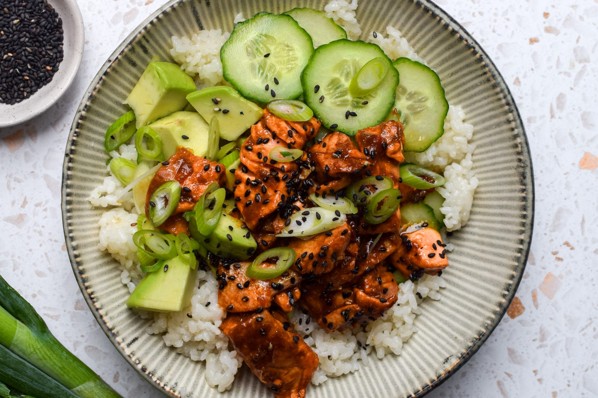

Wild Salmon Power Bowl
⏱️ 30 mins
Medium

Ingredients
- 2 salmon fillets (150g each)
- 1 cup cooked quinoa
- 1 avocado, sliced
- 1 handful fresh spinach
- ½ cucumber, diced
- 2 tbsp soy sauce
- 1 tbsp sesame oil
- 1 tsp honey
- Sesame seeds & green onions
≈ 42g protein · omega-3 rich
Method
- Pat salmon dry and season with salt and pepper.
- Whisk soy sauce, sesame oil, and honey in a small bowl.
- Heat a non-stick pan over medium heat. Sear salmon skin-side down for 4 minutes.
- Flip, brush with half the glaze, and cook another 3–4 minutes.
- Assemble bowls: quinoa, spinach, cucumber, avocado, and salmon. drizzle remaining glaze, top with sesame seeds and green onions.